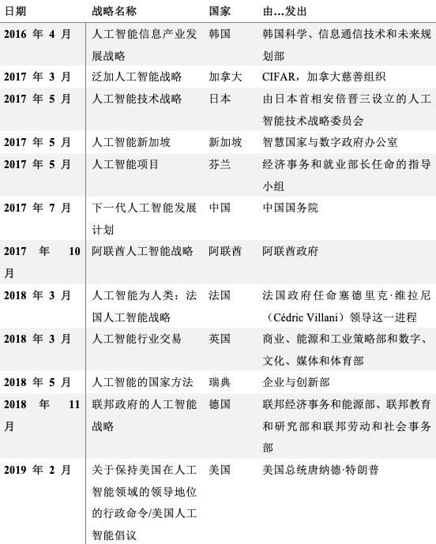

收录于合集

指导人工智能治理：全面看待国家战略
作者： Roxana Radu，日内瓦转型治理实验室博士后研究员，牛津大学社会法律研究中心和研究生院全球治理中心研究助理。
编译： 聂涵琳（国政学人编译员，中国人民大学国际政治经济学专业本科生）
来源： Roxana Radu (2021) Steering the governance of artificial intelligence: national strategies in perspective, Policy and Society , 40:2, 178-193, DOI: 10.1080/14494035.2021.1929728
导读
近年来，发布人工智能国家战略的国家日益增多，其优先事项和治理模式变得更加清晰。本文首次从混合治理的角度对各国的相关战略进行了筛选和全面分析，反映了主导的监管话语和正在形成的公私秩序的（重新）定义。作者从混合性理论中得出两个维度作为分析治理的前进方向：监管方法与各个角色的重新定义，并利用定性内容分析方法检视了2017至2019年间12个国家发布的国家战略，揭示了从起草阶段到创建新的监督机构的人工智能治理设计中的多元制度逻辑和公私互动。研究结果显示，以伦理为导向而非以规则为基础的系统占主导地位，各种制度逻辑的共存是新生的人工智能系统的一个特性，它影响了监管方法的采用，并对发展问责框架给予了有限的关注。
本文的分析部分对国家战略文件进行了举例补充和对比，其提出的概念框架与定性内容分析对这一领域的治理有三方面的贡献：首先，它们揭示了正在形成的混合互动的程度，让国家重新成为一个由私人治理安排主导的领域的核心参与者；其次，它们基于主权主义人工智能项目中嵌入的话语，捕捉到政府为应对人工智能挑战而采取的各种方法；第三，它们揭示了混合治理的关键要素，指出了市场化趋势和功能不确定性。
编译
01
引言
人工智能（AI）是国际关系中争论不休的新领域，笼罩在失去技术控制和人为监督的不确定性中。俄罗斯总统弗拉基米尔·普京在2017年曾说过一句名言：“谁成为这一领域的领导者，谁就是世界的统治者。”自此大量的公共与私人参与者发表了关于人工智能将如何让社会变得更好或更坏的声明，强调了基础设施发展、军事应用以及对就业和人际关系的影响。公众越来越认识到基于算法处理和机器学习的工具所带来的承诺与骚动一样多，政府所承受的压力与日俱增，要求它们为公民福祉和AI存在的理由做出回应。截至2020年，全球已有30多个国家开始讨论设计国家的人工智能战略，其中17个国家已经在实施这些战略。
随着关注从技术视角转向社会转型的趋势开始巩固，治理方法开始受到密切关注。迄今为止，在学术和政策著作中，对伦理的关注盖过了对实施监管的兴趣。 本文通过探索以下问题解决这一差距：国家是如何选择设计人工智能治理战略的？通过混合的视角，本文基于对12个国家战略的定性比较分析，提供了关于人工智能治理的连续性和变革的论述，它们嵌入并揭示了扶持新市场、规范新兴技术以及与非国家行为者合作的主流方法。 本文认为国家战略中概述的优先事项构成了监管配置以及决策中角色和责任的职能分配的基础，起草过程和确定的国家优先事项，反映了多种制度逻辑在多大程度上对人工智能的混合治理方法产生影响。
02
私人治理格局中的国家人工智能战略
在1956年的达特茅斯学院研讨会上，人工智能被首次确立为一个研究领域，这之后对机器智能和机器人的非定向研究获得了美日英政府的资助；然而自70年代初由于缺乏具体成果和应用，公共资金被撤回后，私营部门开始在从工业机器人到数据挖掘等广泛领域的人工智能研究和应用中发挥主导作用。国家的撤退从资助相关研究到定义市场限制，但这并不意味着公众支持的完全撤出，大学和政府资助的项目继续就这一主题进行相关研究。随着人工智能的应用越来越广泛，它获得了更多的支持，各国对人工智能发展日益增长的兴趣集中在控制新技术的负面影响和意外后果的需要上，特别是它们对加剧不平等的影响，而公众担忧其可能被设计成为若干权力中心的意识形态和利益服务，导致地缘政治紧张局势和新的“强国之间的逐底竞争”。
虽然自我监管一直是全球层面对人工智能转型的主要回应，但自2016年以来区域和国家层面的监管讨论和战略方法已获得重视。与这些努力相辅相成的是监管人工智能驱动的具体方法，并根据隐私和数据保护条款塑造该领域的发展。通过拼凑的立法，该领域的“国家的回归”趋势变得更加明显，但只是以碎片化的方式，需要更广泛的治理框架来重构公共与私营部门之间的基本关系。在这方面国家战略更清晰地揭示了在公共领域管理人工智能方法的创新和局限性。
拥有科技行业巨头的国家已经率先行动起来，雄心勃勃地希望在未来十年内主导全球人工智能发展，而许多其他国家特别是发展中国家，仍在讨论其国家优先事项和未来框架。2017年3月，加拿大率先发布了全面的国家人工智能战略，但韩国作为第一个发布针对特定行业战略的国家，比它早了一年。各国目前还没有对该领域的相关创新施加严格限制，但不意味着它们一直是被动参与者，通常情况下它们资助的基础研究推动企业使用的进步，近年来各国政府也开始采用这一技术改革政府，这些举措反映了新兴技术治理中更为复杂和深刻的变化，而无论是“国家的撤退”还是“国家的回归”论点都不能充分捕捉到这些变化。
03
理论洞察： 混合性和人工智能治理
本文将治理理解为不同机构和行为者之间有模式和有序互动的过程，可以审查体制安排，并将治理范围内的责任分开。在公共和私人行为者高度互动的情况下，混合性理论对于揭示不确定情况下的相互依赖关系特别有用，它为治理参与者之间的互动和重叠提供了更细致入微的概念化，揭示了获得新制度形式的利益、角色和共同理解。混合性是“非特例，但不一定是普遍发生的事件”，使用制度逻辑方法可以更好地解释这一点，该方法将规范框架和组织实施方式联系起来。 每个社会的组织原则、物质实践和意识形态建构构成了制度逻辑的基础，有影响力的等级、市场和网络三部曲常被用来区分新的治理模式，在理想形式中，后者对应于公共利益、营利性驱动和目标的混合三种操作逻辑。 混合治理所依据的多元逻辑在两方面改变公共行为者与私人行为者的关系：首先，谈判空间及其身份变得相互依赖；其次，机构本身在面临众多制度逻辑时会发生变化，影响关键参与者和相关问责框架的定位。
将这一理论应用于人工智能治理需要检查混合性的两个维度。第一个维度需要确定混合在什么阶段出现，以及它是否代表了人工智能治理系统的一种新属性，影响未来的政策方向。第二个维度是重新定义混合治理中参与者的角色和身份，以回应对混合理论的批评之一，这一批评指出该理论需要更好的规范。公共和私人之间模糊的边界可能会导致新的机构和重新定义的职能。
04
方法论考量
随着越来越多的国家定义其应对人工智能挑战的方法，它们开始在国家各个层面发布了战略文件，囊括了关键参与者的愿景。这种对国家战略的探索性分析评估了混合治理的实例，重点关注制度动态以及对参与者角色和身份的重新定义。 本文的分析仅限于政府战略或最终形式的国家计划，无论其有无承诺的资源，因为这些文件往往措辞谨慎，适合定性内容分析。 在迄今为止发布的国家战略中，一般分为一般性指导文件和具有明确优先事项和附加资金的指令性计划。本文采用两步法来选择后者的案例及具体的分析维度，仅保留专门针对这一领域的战略，而非将人工智能与其他数字技术并列。
在选择进行分析的国家组中，首先区分将战略作为产业政策指导的国家和采用综合社会政治和经济激励措施的国家，最后保留了12份国家文件进行分析。第二步，将所选策略纳入对感兴趣维度的定性内容分析，通过关键字进行的初始搜索指向所分析文件中的相关章节，包括“公共”、“当局”、“国家”、“机构”、“政府”、“公共利益”、“私营部门”、“企业”、“行业”、“角色”、“责任”、“政策”等。然而仅有关键字是不够的，对被调查维度的引用通常分布在文件的序言和行动要点之间，需要对上下文进行深入分析以理解特定的表述和细微差别。
表1 分析中包含的国家战略

05
发现
本文分析的国家人工智能战略反映了政府在相对较短的时间内完成的权威优先事项、方向和资源分配，然而从人工智能发展的部门愿景到成熟的产业战略和全面的政府方法，它们的范围和长度各不相同。在起草过程中，人工智能战略早期采用者与国家在设计过程中的第一个差距在于， 第一批往往是人工智能领导者和发达国家，而不是发展中国家。 虽然本文分析的大多数国家都认识到国际合作的必要性，但通常情况下都是与技术更先进的国家进行交流，很少提及与发展中国家的关系。德国是一个例外，其国家战略的行动重点是“在经济合作的背景下，在发展中国家建立关于人工智能的能力和知识，以便利用当地的经济和社会机会。” 第二个局限性体现在尽管编写国家战略所采用的的方法多种多样，在许多情况下并未获得广泛共识： 一些国家主持长期的部门磋商，另一些国家则将制定战略委托给个人（如法国）或专家组（如芬兰）。
在起草过程中为企业分配主导地位的一个重要后果是从一开始就嵌入了混合性，没有明确假设公共部门和私营部门之间的权力平衡。随后，作为公共治理举措的一部分，在监督发展过程中行业代表继续发挥重要作用，通常至少占机构成员的三分之一。新兴技术专业知识持续集中在私人手中，这是对推动人工智能创新的公司更先进的商业战略的补充，总体上巩固了它们围绕（数字）力量两极的地位。在国际专利申请方面，中国在2018年仅次于美国，这两个国家的少数几家科技公司也拥有最大的人工智能研究投资，并在开发标准的行业机构中占有一席之地。
06
放大镜下的国家战略：大趋势
分析中的大部分国家都采用了一种以人工智能发展为中心的协调方法，总是有多种制度逻辑在起作用，并且很多时候都是有意设计的。行业代表在专家讨论和人工智能工作组中的大力参与揭露了长期存在的功能不确定性，不同行为体通过正式和非正式规则对彼此决策的相互影响，也体现了混合结构中存在的多元和非等级治理概念的特点。
查看这些战略中缺少的内容同样重要：从起草过程如何进行的具体细节到人工智能的军事和监视用途。 尽管新兴技术与国家安全相关，但只有少数国家（中国、法国和美国）提及该领域的军事利益。虽然许多战略都对国家角色的变化进行了详尽但有选择性的讨论，但仅有少数战略对公共利益和私人利益之间的区别提出了质疑（芬兰、日本和韩国）。在本文分析的案例中，政府为自己设想了多样的角色，例如引领全球人工智能发展（中国、英国、美国），确保技术主权（德国），监督人工智能应用的过程（芬兰、法国），纠正最弱势群体的市场失灵（韩国），或成为先进技术的第一买家（阿联酋）。然而，所有战略对于使他们能够发挥这些作用的具体措施仍然含糊不清。
07
国家人工智能战略的变化：新的角色和机构
对这里提出的混合论点至关重要的是，公共和营利性部门的立场和利益在所分析的国家文件中似乎没有明确界定，显示出高度的功能不确定性。大多数政府似乎没有采取监管或提出一致的国家干预方向，而是通过反思方向来思考所需的改变。12项国家战略没有建立以规则为基础的制度，而是采用并优先考虑了道德导向，分析的所有文件（除了中国和美国的战略）都强调设计伦理原则和指导规范方向的发展。虽然规则和道德方向并不矛盾且可能会共存，但它们代表了建立在不同价值观和信任体系基础上的监管制度。
大多数国家都设想建立专门的人工智能委员会或数据委员会来监控人工智能的采用和实施过程，推动人工智能政策任务的监督机构或人工智能委员会通常由学术界和私营部门的代表主导。总体而言，非政府组织和权利团体的代表性并不相同，人工智能战略很少将这些技术的最终用户作为政策对话的特定群体。在设计它们时，混合性导致了一种共同的视野方法，因为相互性和相互依赖不断增加，市场和国家的行动不再能被解绑，这可能更接近私营部门的逻辑。
在国家战略中可以确定关于人工智能治理制度化的多种方法。在少数情况下（中国、日本、法国、美国），现有部委被要求推动和协调跨部门工作，职责范围通常是它们所涵盖的领域。更注重卓越研究的各国政府将注意力转向即将建立的新机构和研究方案。除这些结构外，许多国家战略以定义松散的专家组（称为“独立的”或“多方利益攸关方”）的形式引入正式的政策投入，其最终组成一般在文件发表时尚未确定。他们参与设计使用人工智能数据的伦理原则，并在人工智能相关优先事项上向政府提供更广泛的指导。
这些新设立的机构是对新技术所蕴含的不确定性的制度性回应，因为它们的职权没有明确规定，且仍然取决于选定的成员。 因此公共和私营部门角色的重新定义出现了新的转变，在将人工智能治理纳入现有部委的职权范围、设立新的职能和提出职责模糊的新机构之间摇摆不定。大多数情况下这些解决方案被组合在一起，形成了人工智能领域日益复杂的配置。 目前国家战略中缺少的是明确说明由谁制定规则以及规则的持续时间，在这种背景下问责制框架仍然难以建立。
08
结论
作为部署在日常服务中的通用技术，人工智能需要国家和国际治理体系。在本文分析的国家战略中，将政治意愿、公共资源与行业利益结合起来似乎是人工智能政策制定的首选配方，公共利益政策与市场主导利益分开变得越来越困难，这是混合治理体系中多元逻辑的一大特征。新的咨询机构的出现，可能会导致人们更多地接受功能不确定性作为人工智能治理的主流做法。值得注意的是，各国政府和行业的利益在国家层面是紧密结合的。 强烈的市场创造导向、公共和私营部门角色的模糊定义以及道德准则的优先次序表明，混合治理体系既是政府的意图，也是人工智能快速发展的结果。 未来的研究需要扩展新兴人工智能秩序的影响，捕捉其早期设计如何在（数字）权力分配中发挥作用，特别在私人标准和国际议程层面。在创新方面，技术先进的国家正在设定标准，在这种背景下，需要在不久的将来对发展中国家的人工智能战略进行分析。
词汇整理
国际专利申请
international patent application
混合理论 hybridity thesis
通用技术 all-purpose technology
《可信AI伦理指南》
Ethics Guidelines for Trustworthy AI
审校 | 肖龙 赵怡雯
排版 | 任航奇 赵梓煦
文章观点不代表本平台观点，本平台评译分享的文章均出于专业学习之用, 不以任何盈利为目的，内容主要呈现对原文的介绍，原文内容请通过各高校购买的数据库自行下载。

国政学人
支持学术公益与知识传播
微信扫一扫赞赏作者 __赞赏
已喜欢，对作者说句悄悄话
取消 __
发送给作者
发送
最多40字，当前共字
上一页 1/3 下一页
长按二维码向我转账
支持学术公益与知识传播
受苹果公司新规定影响，微信 iOS 版的赞赏功能被关闭，可通过二维码转账支持公众号。